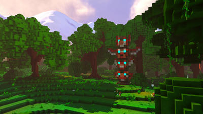
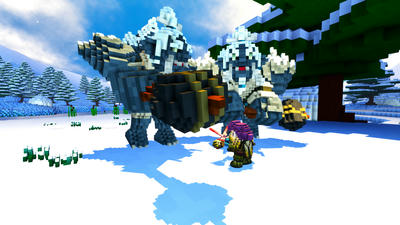
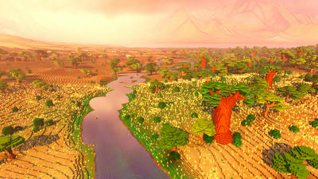

What the game is
A cooperative voxel RPG with combat, traversal, crafting, NPCs, procedural terrain, and multiplayer worlds.
An open-source multiplayer voxel RPG inspired by exploration-heavy adventure games: roam a procedural world, fight, craft, glide, build a character, and host a private LAN world when the server path is ready.
Veloren is a bigger target than the current browser games. It is promising for a garage-class LAN server, but it is not a Pi/camping game until the server, client assets, and real device smoke are proven.
A cooperative voxel RPG with combat, traversal, crafting, NPCs, procedural terrain, and multiplayer worlds.
The official Linux Airshipper launcher ZIP is cached locally with a SHA256 file. Screenshots and notes are available offline from this hub.
The latest launcher requires newer glibc than Debian 12 provides, so the full game/server profile is still pending. Next path is Docker/server research or an older compatible build.
Selected official screenshots are cached so players can understand the game before the full offline pack is ready.



This hub is an intake page, not a playable promise. Use it to decide whether Veloren deserves the next full server/client smoke.
Players normally use Airshipper to download and update Veloren. The cached Linux launcher is useful for newer Linux clients, but this Debian 12 VM cannot run the current binary.
Upstream documents LAN hosting: run a server, then players connect to the host IP from the same network.
The smoke test must record memory, CPU, ports, logs, and whether a real client can join. This is likely garage-server tier, not Raspberry Pi tier.
The service should start only when players choose Veloren, then stop after smoke or play unless the admin keeps it running.
These links point at the current GannanNet cache and upstream reference pages.
Cached launcher ZIP: /var/www/html/mirrors/veloren/downloads/airshipper-linux-x86_64.zip
Known blocker: on Debian 12, the current Airshipper binary asks for glibc 2.38/2.39. Do not use this as a VM server smoke until that compatibility path is solved.
See ATTRIBUTION.txt for source, license, and screenshot notes.
This tells players whether the entry is ready to play or only ready to research.
SHA256 recorded in the local downloads folder.
Latest Airshipper binary requires newer glibc than Debian 12.
Find a compatible server path, then run a real join smoke.